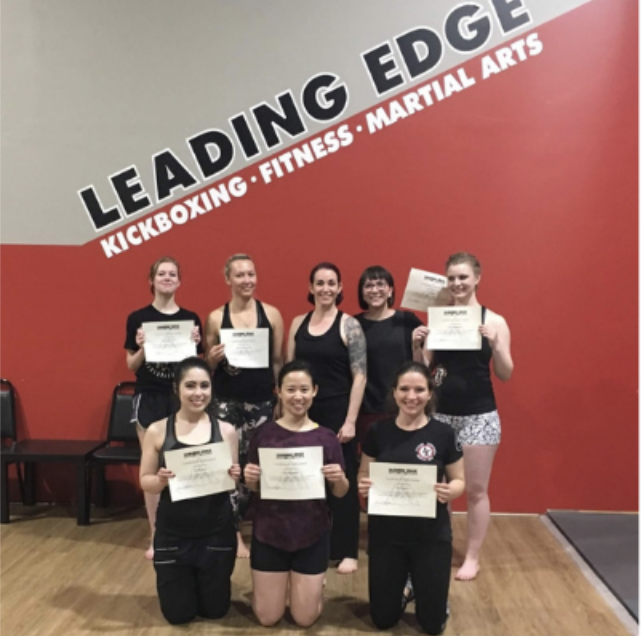
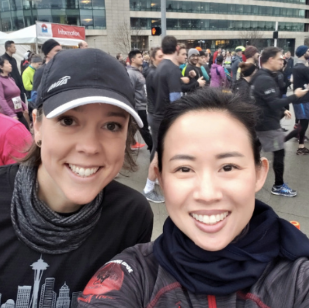
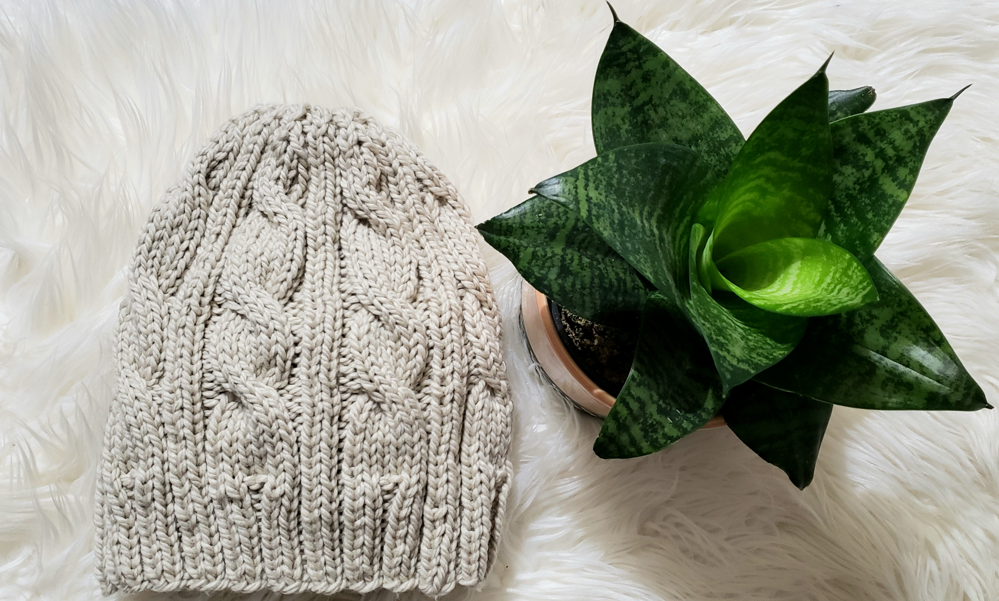

Women's Self Defense Certification

- I believe that knowing self defense is an important aspect and right for everyone- to protect one's self and our loved ones. In receiving certification, I co-instruct in monthly classes teaching women defense against knives, guns, and ground
attacks.
Green Beauty
- Natural beauty became important when I garnered an understanding of how products were tested on animals. I want to leave a better world for my children and the first step was to become more conscientious about everyday products. This led me
to start a personal website exploring the best of what the natural beauty community had to offer. As a result, I collaborated with several brands and gathered a community of 2500 women connected over social media.
Running

- Nothing is better than running for a charitable cause alongside a good friend. It has been an honor to complete races benefiting breast cancer and heart health research and building homes in the Philippines.
Knitting

- Knitting is therapeutic and challenging in the most gratifying way. I love finding that most people find knitted gifts something to be treasured and appreciated.